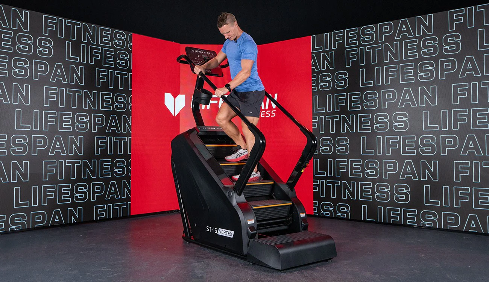

Workout 1: Treadmill
- Regular Walking: At a low speed for warm-up or cool-down.
- Fast Walking: At a moderate speed to increase activity and burn calories.
- Incline Walking: Adjust the incline to mimic uphill walking and strengthen muscles.
- Interval Training: Alternate between different speeds for endurance and calorie burn.
*For more information about Push-ups exercises,click on the photo*
Workout 2: Stair Climber
Mimics stair climbing, excellent for strengthening legs and burning calories.
*For more information about squat exercises,click on the photo*
Workout 3: curved treadmill
A non-motorized treadmill that relies on your effort, offering a more challenging workout that engages your entire body.
*For more information about Pull-up exercises,click on the photo*
Workout 4: Stationary Bike
While not technically walking, it’s a low-impact alternative to improve cardiovascular fitness and leg strength.
*For more information about Crunches exercises,click on the photo*